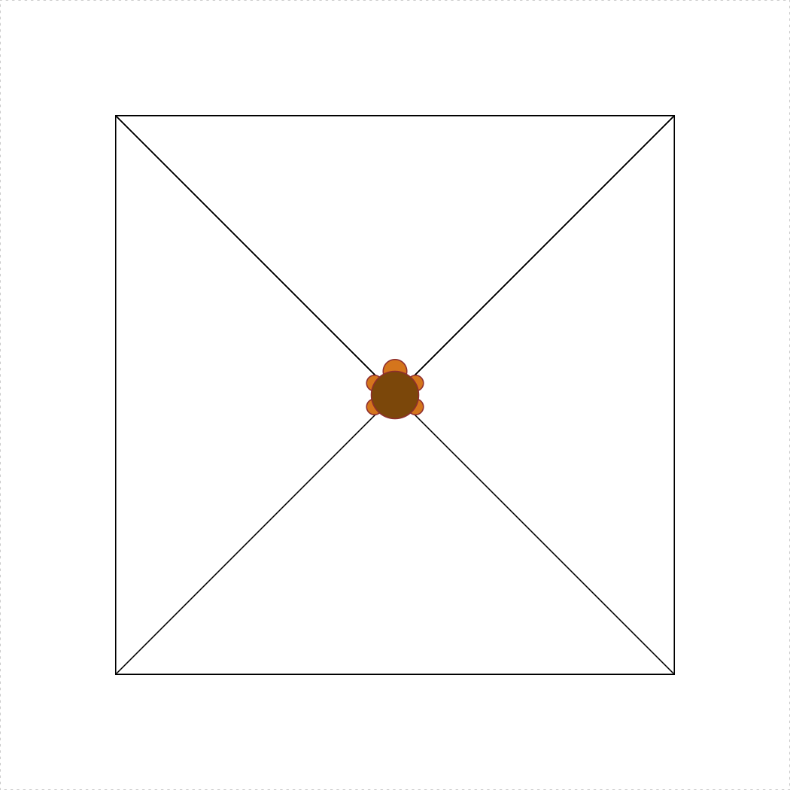

Due: Sunday, 08-Sept. at 8pm
Rules:
Assignment:
Before going forward, read the Course Syllabus as well as the Getting Started and Programming Basics lessons. [5 pts]
Open RStudio and create a new project called “hw1-lastName”, replacing “lastName” with your last name.
Create a new R script and save it as “hw1.R” in the R project folder you just created.
Copy the following code to the top of this script, and fill out your name, GW Net ID, and the names of anyone you worked with:
# hw1.R
# Name: Last, First
# GW Net ID: your_GWNetID_here
# I worked with the following classmates on this assignment:
# 1) Name: Last, First
# 2) Name: Last, FirstType all of your answers to the following questions in the “hw1.R” script. [point breakdown is listed by each problem]
After completing the questions, create a zip file of all files in your R project folder for this assignment and submit the zip file on Blackboard by the due deadline (note: to receive full credit, your submission must follow the above format of using a correctly-named R Project and .R script). [5 pts]
Consider the following objects:
w <- TRUE
x <- FALSE
y <- FALSE
z <- TRUEWrite code to answer the following questions:
x, y, and z and returns TRUEx, y, and z and returns FALSETRUE: ! (x __ y) & ! (z __ y)FALSE: ! (w __ y) | (z __ y)Create objects to store each of the following values. Use names that make sense and are easy to understand:
Use the objects you created to calculate the following (you may create other, intermediate objects, but you may not use numbers in your solution):
Load the following string in R:
sentence <- 'The quick Brown fox Jumped over the Lazy dog'Install and load the stringr library, then use the str_to_lower(), str_to_upper(), and str_to_title() functions and the cat() function to print out the following variations of the object sentence that you just created (hint: you may want to first look up what the str_to_lower(), str_to_upper(), and str_to_title() functions do):
"the quick brown fox jumped over the lazy dog"
"THE QUICK BROWN FOX JUMPED OVER THE LAZY DOG"
"The Quick Brown Fox Jumped Over The Lazy Dog"Max is looking to purchase a car and is deciding between a Toyota Prius and a Toyota Camry. He knows that based on his driving patterns, he can get an average fuel economy of 55 miles per gallon (mpg) of gasoline with the Prius, which sells for $27,600. He is also considering the cheaper Toyota Camry, which costs $24,000 but only gets 32 mpg on average. He knows he typically drives 15,000 miles each year. For the following questions, assume the price of gas will remain constant at $3.00 / gallon forever.
2 once in your solution, otherwise you may only use the objects you defined in parts a) and b).Load the following objects into R, then answer the questions below:
x1 <- 1
y1 <- 1
x2 <- 5
y2 <- 1
x3 <- 5
y3 <- 4d1.d2.d3.d1, d2, and d3.Suppose we fielded a survey that asked respondents to specify their marital status. The responses were recorded as one of the following:
"single""widowed""married""de facto""missing"where "missing" means the respondent left the question blank.
Assume there is an object in your R environment called marital_status that contains one of the above responses stored as a character. For each of the following, write a single line of code that uses the marital_status object to create the desired new object (note that if you actually run your code in R for this exercise, you’ll get an error, because the marital_status object doesn’t actually exist in your R environment):
is_single: Is TRUE if the participant is single and FALSE otherwise.has_spouse: Is TRUE if the participant is married or in a de facto relationship and FALSE otherwise.not_single_or_missing: Is TRUE if the participant did respond to the question, but is not single.TurtleGraphics package HERETurtleGraphicsTurtleGraphics library, then use the following command: turtle_init(). What happens?TurtleGraphics package:help(package='TurtleGraphics')turtle_move() function in the TurtleGraphics package:?turtle_move()turtle_init()
turtle_move(distance = 10, direction = "forward")
turtle_move(distance = 20, direction = "backward")
turtle_reset()
turtle_turn(angle = 90, direction = "right")
turtle_move(distance = 10, direction = "forward")
turtle_move(distance = 20, direction = "backward")
turtle_reset()TurtleGraphics package works, write code to produce the following image: